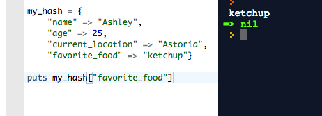
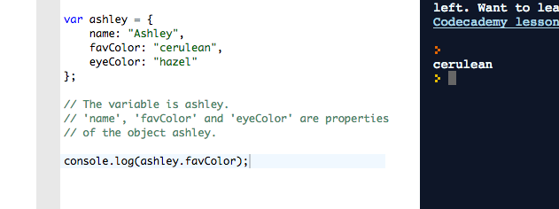
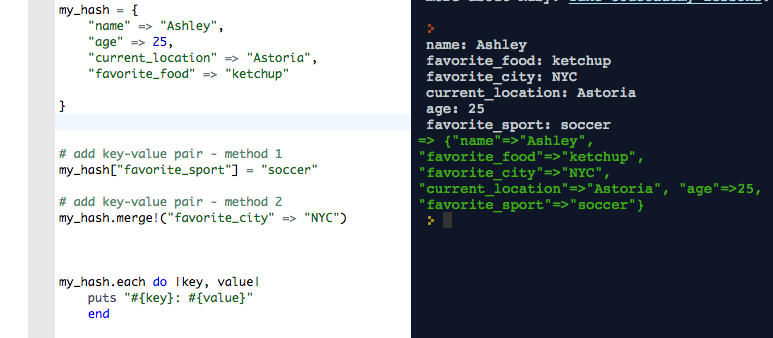
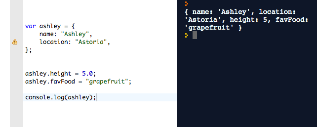

This week at DBC we learned about the basics of JavaScript, including an intro to variables, functions and syntax. JavaScript has seemed pretty similar to Ruby so far with several important differences - a bit like going from Italian to Spanish.
It's also a bit like an episode of Recess in which the kids wind up in an adjacent school, which contains dopplegangers of all of the characters. For instance, instead of the Ashleys, the popular clique of girls on the playground is called the Brittanys. They are a little different, but serve basically the same function.
Ruby Hashes vs. JavaScript Objects: the scoop
In Ruby, we saw that we could use a special collection of key-value pairs to store information between curly brackets. This set was an object type called a hash. Unlike arrays, hashes in Ruby don't really have an internal order of keys, and instead we can basically access any key-value pair by referring directly the key, as so:
JavaScript has arrays but it doesn't have hashes per se. But, it has object variables that can behave very similarly. Here's an example:
name, favColor, and eyeColor are called properties of the object ashley. What do they remind you of in hashes?
Yep! Keys. Each property in the JavaScript object functions in basically the same way as a key
in the Ruby hash, letting you access the information value attached. Whereas values are accessed from Ruby hashes using square brackets - my_hash[key] - values are accessed from JS objects by asking myObject.myProperty.
Adding items to a hash in Ruby
In a Ruby hash, you can add key-value pairs in a few ways, including:
Adding properties to an Object in JS
In contrast, to add properties to a JavaScript object, you simply entermyObject.newProperty = newValue. For instance:

You can also delete items from both Ruby hashes and JS objects. To delete a key-value pair from a hash in Ruby, you would say my_hash.delete(key). In JS, you can eliminate a property from an object by going: delete ashley.favFood.
Multiple layers and nesting
Finally, remember how in Ruby hashes could have values that were also hashes themselves? Or an array? Well, JavaScript objects can have properties that have 'properties' of their own. That is, the favFoods property of ashley could be an object that contains various foods:
See where it printed "fried icecream" on the upper right? That was because we asked the object for the breakfast property of japaneseCuisine, which was the value of the favFood property of ashley. That is: ashley.favFood.breakfast = "fried icecream".
So that was a recap of some of the basic differences between manipulating information with Ruby hashes and JavaScript objects. Which is more useful? I am still working on a larger level picture and will give updates, but I imagine it will depend upon what we'd like to do. Thanks for reading and I hope you found something useful!
 Twitter
Twitter GitHub
GitHub